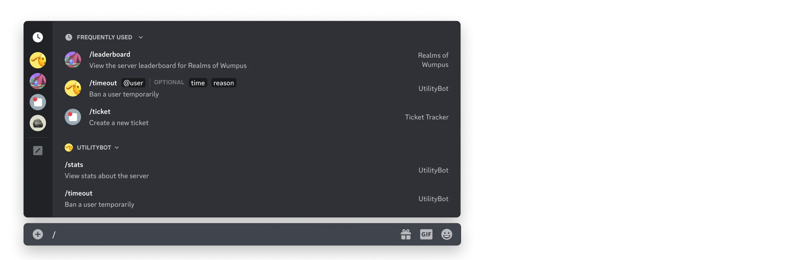
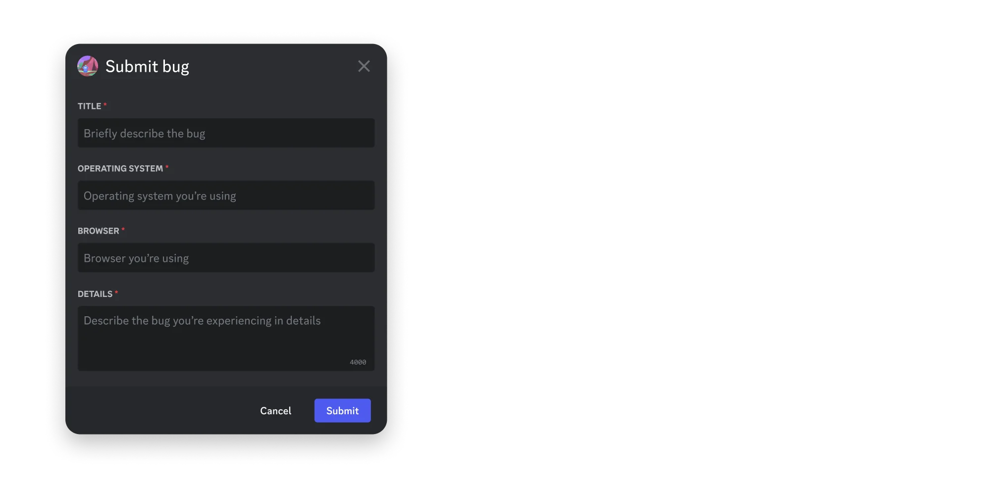

交互功能概述
诸如命令和消息组件之类的交互功能允许用户在Discord内原生调用应用程序。当用户与您应用的交互功能互动时，您的应用将收到一个交互对象。
本概述包括主要交互类型的概览，以及为您准备应用使用和接收交互的步骤。有关处理交互的参考文档和详细信息，请参阅接收与响应。
交互类型
您应用的工具箱中有多种交互类型，可以选择并组合使用，以在Discord中构建引人入胜的交互体验。
命令
应用程序命令为用户提供在Discord中调用应用的原生方式。它们通常映射到应用的核心功能或特性。

当应用创建命令时，可以选择命令的类型，这决定了它在Discord客户端中的显示位置以及调用命令时应用将接收的元数据。应用程序命令有三种类型：
- 斜杠命令是最常见的命令类型，通过在聊天输入框中输入
/或打开命令选择器来访问。 - 消息命令是与消息或消息内容相关的命令。通过点击消息右上角的上下文菜单（三个点）（或右键点击消息），然后导航至"应用"部分来访问。
- 用户命令是与Discord中用户相关的命令。通过右键点击用户个人资料，然后导航至"应用"部分来访问。
- 入口点命令是作为从应用启动器启动活动的主要方式使用的命令。
有关创建命令和处理命令交互的详细信息，请参阅应用程序命令文档。
消息组件
消息组件是可以在您的应用在Discord中发送的消息内容中包含的交互元素。
应用可以在消息中发送的主要交互组件包括：
- 按钮是可点击的组件，可以使用不同的样式、文本和表情符号进行自定义。
- 静态选择菜单是用户可以打开以查看开发者定义的选择选项列表的组件，这些选项具有自定义标签和描述。
- 自动填充选择菜单是一组四种不同的选择组件，它们会填充上下文相关的Discord资源，如服务器中的用户列表或频道列表。
所有消息组件的列表以及发送和接收组件交互的详细信息，请参阅消息组件文档。
模态框
模态框是单用户弹出界面，允许应用收集类似表单的数据。模态框只能在用户调用您应用的命令或消息组件时作为响应打开。

模态框可以包含的组件可在组件参考中找到。模态框提交后接收的数据可在每个组件的交互响应结构中找到。
有关创建和使用模态框的详细信息，请参阅接收与响应文档。
为交互做准备
当用户与您的应用交互时，您可以选择让您的应用以两种互斥的方式接收交互：
- 基于WebSocket的网关连接
- 通过传出Webhook的HTTP
默认情况下，您的应用程序将通过网关连接接收交互，但您可以通过在应用程序设置中添加交互端点URL来选择基于HTTP的交互。有关处理交互的技术细节，请参阅接收和响应文档。
配置交互端点URL
交互端点URL是您应用程序的公共端点，Discord可以在此向您的应用程序发送基于HTTP的交互。如果您的应用程序使用基于网关的交互，则无需配置交互端点URL。
设置端点
在将交互端点URL添加到您的应用程序之前，您的端点必须提前准备好两件事：
- 确认来自Discord的
PING请求 - 验证与安全相关的请求头（
X-Signature-Ed25519和X-Signature-Timestamp）
如果其中任何一项未完成，您的交互端点URL将无法通过验证。有关确认PING请求和验证安全相关标头的详细信息，请参阅以下部分。
确认PING请求
在添加交互端点URL时，Discord将向您的端点发送带有PING负载（类型为type: 1）的POST请求。您的应用程序需要通过返回带有PONG负载（同样具有type: 1）的200响应来确认请求。有关交互响应的详细信息，请参阅接收和响应文档。
在响应PING时，您必须提供有效的Content-Type。更多信息请参见此处。
响应PING请求
确认PING交互的代码示例
要正确确认PING负载，请返回带有type: 1负载的200响应：
@app.route('/', methods=['POST'])
def my_command():
if request.json["type"] == 1:
return jsonify({
"type": 1
})
验证安全请求头
互联网是一个危险的地方，特别是对于托管公共、未经身份验证的端点的人来说。要通过HTTP接收交互，在您的应用程序有资格接收请求之前，必须采取一些安全步骤。
每个交互都附带以下标头：
X-Signature-Ed25519作为签名X-Signature-Timestamp作为时间戳
使用您喜欢的安全库，每次收到交互时都必须验证请求。如果签名验证失败，您的应用程序应返回401错误代码。
验证安全头
验证安全相关请求头的代码示例
以下是一些代码示例，展示了如何验证交互请求中发送的标头。
JavaScript
const nacl = require("tweetnacl");
// 您的公钥可以在开发者门户中的应用程序上找到
const PUBLIC_KEY = "APPLICATION_PUBLIC_KEY";
const signature = req.get("X-Signature-Ed25519");
const timestamp = req.get("X-Signature-Timestamp");
const body = req.rawBody; // rawBody应为字符串，而非原始字节
const isVerified = nacl.sign.detached.verify(
Buffer.from(timestamp + body),
Buffer.from(signature, "hex"),
Buffer.from(PUBLIC_KEY, "hex")
);
if (!isVerified) {
return res.status(401).end("invalid request signature");
}
Python
from nacl.signing import VerifyKey
from nacl.exceptions import BadSignatureError
# 您的公钥可以在开发者门户中的应用程序上找到
PUBLIC_KEY = 'APPLICATION_PUBLIC_KEY'
verify_key = VerifyKey(bytes.fromhex(PUBLIC_KEY))
signature = request.headers["X-Signature-Ed25519"]
timestamp = request.headers["X-Signature-Timestamp"]
body = request.data.decode("utf-8")
try:
verify_key.verify(f'{timestamp}{body}'.encode(), bytes.fromhex(signature))
except BadSignatureError:
abort(401, 'invalid request signature')
除了确保您的应用在保存终端点时验证与安全相关的请求头外，Discord 还会对您的终端点执行自动化的例行安全检查，包括故意向您发送无效签名。如果验证失败，我们将移除您的交互 URL，并通过电子邮件和系统 DM 提醒您。
我们强烈建议查看我们的 社区资源 以及其中提供的库。它们不仅为交互数据模型提供类型支持，还包括适用于 Flask 和 Express 等 API 框架的装饰器，使验证变得简单。
添加交互终端点 URL
当您拥有一个公共终端点作为应用的交互终端点 URL 后，您可以通过访问 应用设置 将其添加到您的应用中。
在常规概览页面中，找到交互终端点 URL 字段。粘贴您已设置为确认 PING 消息并正确处理与安全相关的签名头的公共 URL。
处理交互
一旦您的应用准备好处理交互，您可以查阅 接收与响应 文档，其中详细介绍了在应用中处理交互请求的技术细节。